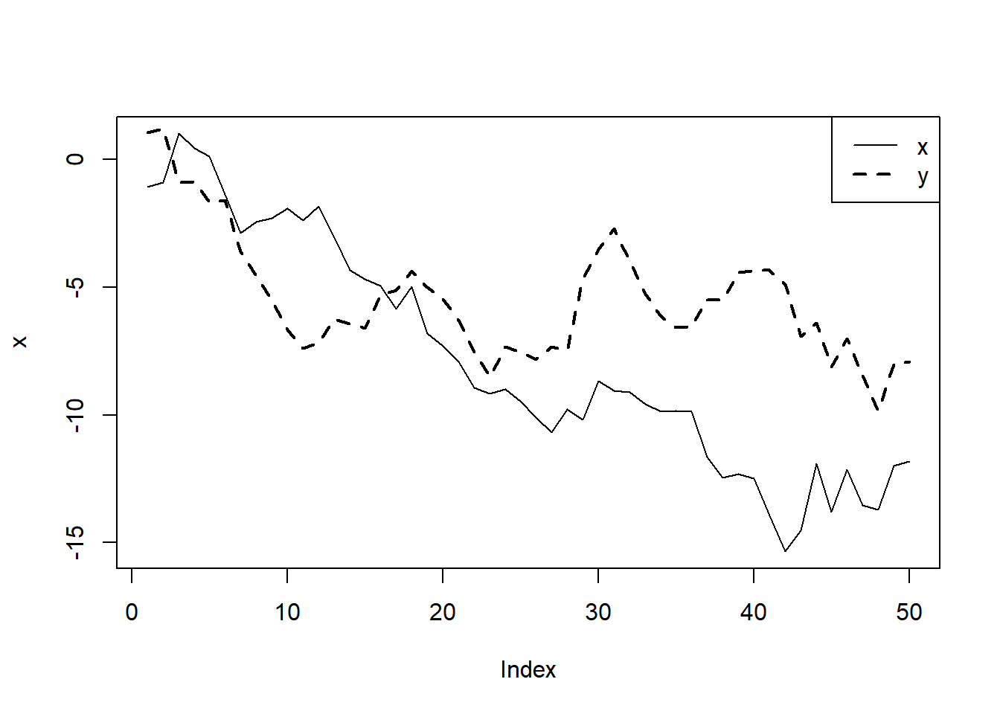
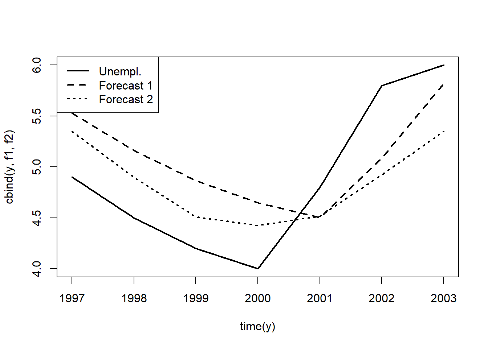

Previously, we discussed a finite distributed lag (FDL) model. Now, we will introduce an infinite distributed lag (IDL) model. Compared with a finite distributed lag model, an IDL model does not require that we truncate the lag at a particular value. \[ y_t=\alpha + \delta_1 z_{t-1} + \delta_2 z_{t-2} + \delta_3 z_{t-3} + ... + u_t \] For the model to make sense, \(\delta_j \rightarrow 0\) as \(j \rightarrow \infty\). This makes economic sense: the distant past of \(z\) should be less important for explaining \(y\) than the recent past of \(z\).
The long-run propensity in IDL model is the sum of all of the lag coefficients: \[ LRP=\delta_0+\delta_1+\delta_2+... \] LRP measures the long-run change in the expected value of y given a one-unit, permanent increase in z.
Suppose that after \(z\) time periods, the process is steady: \(\delta_z=0, \delta_{z+1}=0, ...\) \[ E(y_h) = \alpha + \delta_1 + \delta_2 + \delta_3 + ... + \delta_h \] As \(h\rightarrow\infty\), \(E(y_h)\rightarrow (LRP+\alpha)\).
The simplest version of IDL is the geometric (or Koyck) distributed lag model. \[ \delta_j= \gamma \rho^j, |\rho|<1,j=1,2,3,... \] The restriction on \(\rho\) ensures convergence: \(\delta_j\rightarrow0\) as \(j\rightarrow\infty\). Long run propensity in this model is: \(LRP=\gamma/(1-\rho)\)
After a little bit of algebra, we have the following model: \[ y_t=\alpha_0+\gamma z_t + \rho y_{t-1}+v_t \] If we assume that \(v_t\equiv u_t-\rho u_{t-1}\) is unccorelated with y_t, then we can estimate \(\alpha_0\) and \(\rho\) by OLS. Otherise, we either need to find a suitable IV, or assume a specific kind of serial correlation that \(u_t\) follows.
Another model is called a rational distributed lag model (RDL). Consider the following model: \[ y_t=\alpha_0+\gamma_0 z_t + \rho y_{t-1} +\gamma_1 z_{t-1} +v_t \] By repeated substitution of lagged y in the above equation, we can show that \(y_t\) equals: \[ y_t = \alpha_0 + \gamma_0 (z_t + \rho z_{t-1}+ \rho^2 z_{t-2} +...) +\gamma_1 (z_{t-1} + \rho z_{t-2}+ \rho^2 z_{t-3} +...) + u_t \] \[ y_t = \alpha_0 + \gamma_0 z_t + (\rho \gamma_0 + \gamma_1) z_{t-1} + \rho (\rho\gamma_0+\gamma_1) z_{t-2} + \rho^2 (\rho\gamma_0 +\gamma_1) z_{t-2} + u_t \] LRP in this model: $LRP=(_0+_1)/(1-)
Let’s look at an example in which we estimate how residential price inflation affects movements in houisng investment around its trend using data set hseinv. Both, geometric and rational distributed lag models are estimated. See the R-code code below. The two models give significantly different estimates of LRP. Because the geometric distributed lag model omits the relevant lag (\(gprice_{t-1}\)), LRP is implausibly high (5 times higher than in RDL). The LRP estiamted from RDL model, however, is not statistically different from zero.
library(dynlm); library(stargazer)
data(hseinv, package='wooldridge')
# detrended variable: residual from a regression on the obs. index:
trendreg <- dynlm( log(invpc) ~ trend(hseinv), data=hseinv )
hseinv$linv.detr <- resid( trendreg )
# ts data:
hseinv.ts <- ts(hseinv)
# Koyck geometric d.l.:
gDL<-dynlm(linv.detr~gprice + L(linv.detr) ,data=hseinv.ts)
# rational d.l.:
rDL<-dynlm(linv.detr~gprice + L(linv.detr) + L(gprice),data=hseinv.ts)
stargazer(gDL,rDL, type="text", keep.stat=c("n","adj.rsq"))##
## =========================================
## Dependent variable:
## ----------------------------
## linv.detr
## (1) (2)
## -----------------------------------------
## gprice 3.095*** 3.256***
## (0.933) (0.970)
##
## L(linv.detr) 0.340** 0.547***
## (0.132) (0.152)
##
## L(gprice) -2.936***
## (0.973)
##
## Constant -0.010 0.006
## (0.018) (0.017)
##
## -----------------------------------------
## Observations 41 40
## Adjusted R2 0.375 0.504
## =========================================
## Note: *p<0.1; **p<0.05; ***p<0.01# LRP geometric DL:
b <- coef(gDL)
b["gprice"] / (1-b["L(linv.detr)"])## gprice
## 4.688434# LRP rationalDL:
b <- coef(rDL)
(b["gprice"]+b["L(gprice)"]) / (1-b["L(linv.detr)"])## gprice
## 0.7066801We now look at the problem of testing if a time serieis follows a unit roots. Consider an AR(1) model: \[ y_t=\alpha+\rho y_{t-1}+e_t, t=1,2,... \] and assuming that \(e_t\) follows a martingale difference sequence, that is \(E(e_t|y_{t-1},y_{t-2},...,y_0)=0\). If \(\rho=1\), \(\{y_t\}\) has a unit root.
When testing if a series has a unit root, we specify the null hypothesis as \(H_0:\rho=1\), and alternative as \(H_1:\rho<1\). When \(\rho<1\), \(\{y_t\}\) is a stable AR(1) process.
The most widely used test for unit root is called the Dickey-Fuller (DF) test for unit root. subtracting lagged y from the above equation, we obtain the following in which \(\theta=\rho-1\) \[ \Delta y_t=\alpha + \theta y_{t-1}+e_t \] We reject the null \(H_0: \theta=0\) against \(H_1: \theta<0\) if t-statistic from the DF test is less than the critical value for arbitrarily chosen critical value (see the table below).
| Significance Level | 1% | 2.5% | 5% | 10% |
|---|---|---|---|---|
| Critical Value | -3.43 | -3.12 | -2.86 | -2.57 |
Let’s look at how we would run a unit root test in R. Dataset intqrt contains quarterly interest rates on three-month T-bills. We can test if the time series have a unit root.
library(dynlm); library(stargazer)
data(intqrt, package='wooldridge')
intqrt.ts = ts(intqrt)
regDF1= dynlm(cr3 ~ L(r3),data=intqrt.ts)These standard errors cannot be used to construct usual confidence intervals or to carry out traditional t-tests because they do not behave in the usual ways when there is a unit root. The coefficient on \(r3_{t_1}\) shows that the estimate of \(\rho\) is \(\hat\rho = 1 + \hat \theta = 0.909\). While this is less than unity, we do not know whether it is statistically less than one. The t-statistic on \(r3_{t-1}\) is \(2.091/0.037 = -2.46\). From the table above, we see that the 10% critical value is -2.57; therefore, we fail to reject \(H_0: \rho = 1\) against \(H_1: \rho < 1\) at the 10% significance level.
When we fail to reject a unit root, we should only conclude that the data does not provide strong evidence against \(H_0\). In this example, the test does provide some evidence against \(H_0\) because the t statistic is close to the 10% critical value.
What happens if we now want to use \(r3_t\) as an explanatory variable in a regression analysis? The outcome of the unit root test implies that we should be extremely cautious: if \(r3_t\) does have a unit root, the usual asymptotic approximations need not hold. One solution is to use the first difference of \(r3_t\) in any analysis.
An extended version of the Dickey-Fuller unit root test is called augmented Dickey-Fuller test which is augmented with the lagged changes in \(y\). The critical values and rejection rule are the same as before. The inclusion of the lagged changes in the test is intended to clean up any serial correlation in \(\Delta y_t\) but reduces the number of observations and statistical power. For annual data, one or two lags may suffice. For monthly data, we may include 12 lags. But there are no hard rules to follow in any case.
In R, let’s test for unit root in annual US inflation data using years from 1948 through 1996 using augmented Dickey-Fuller test. See the R-code below.
library(dynlm); library(stargazer)
data(phillips, package='wooldridge')
phillips.ts = ts(subset(phillips,year<=1996))
regADF2= dynlm(cinf ~ L(inf)+L(cinf),data=phillips.ts)The t statistic for the unit root test is \(2.310/.103 = 23.01\). Because the 5% critical value is 22.86, we reject the unit root hypothesis at the 5% level. The estimate of \(\rho\) is about 0.690. Together, this is reasonably strong evidence against a unit root in inflation.
For series that have clear time trends, we need to modify the test for unit roots. A trend-stationary process-which has a linear trend in its mean but is I(0) about its trend-can be mistaken for a unit root process if we do not control for a time trend in the Dickey-Fuller regression. In other words, if we carry out the usual DF or augmented DF test on a trending but I(0) series, we will probably have little power for rejecting a unit root. We change the basic test equation to: \[ \Delta y_t=\alpha +\delta t+ \theta y_{t-1}+e_t \] The null hypothesis is \(H_0:\theta=0\) and the alternative is \(H_1:\theta<0\). When we include a time trend in the regression, the critical values of the test change. We use the following critical values.
| Significance Level | 1% | 2.5% | 5% | 10% |
|---|---|---|---|---|
| Critical Value | -3.96 | -3.66 | -3.41 | -3.12 |
We can apply the unit root test with a time trend to the U.S. GDP data in inven which contains annual data from 1959 through 1995 and seem to exhibit a clear linear trend. Let’s test if \(\log(GDP_t)\) has a unit root. See the R-code below.
library(dynlm); library(tseries)
data(inven, package='wooldridge')
# variable to test: y=log(gdp)
inven$y <- log(inven$gdp)
inven.ts<- ts(inven)
# summary output of ADF regression:
summary(dynlm( d(y) ~ L(y) + L(d(y)) + trend(inven.ts), data=inven.ts))##
## Time series regression with "ts" data:
## Start = 3, End = 37
##
## Call:
## dynlm(formula = d(y) ~ L(y) + L(d(y)) + trend(inven.ts), data = inven.ts)
##
## Residuals:
## Min 1Q Median 3Q Max
## -0.046332 -0.012563 0.004026 0.013572 0.030789
##
## Coefficients:
## Estimate Std. Error t value Pr(>|t|)
## (Intercept) 1.650922 0.666399 2.477 0.0189 *
## L(y) -0.209621 0.086594 -2.421 0.0215 *
## L(d(y)) 0.263751 0.164739 1.601 0.1195
## trend(inven.ts) 0.005870 0.002696 2.177 0.0372 *
## ---
## Signif. codes: 0 '***' 0.001 '**' 0.01 '*' 0.05 '.' 0.1 ' ' 1
##
## Residual standard error: 0.02011 on 31 degrees of freedom
## Multiple R-squared: 0.268, Adjusted R-squared: 0.1972
## F-statistic: 3.783 on 3 and 31 DF, p-value: 0.02015# automated ADF test using tseries:
adf.test(inven$y, k=1)##
## Augmented Dickey-Fuller Test
##
## data: inven$y
## Dickey-Fuller = -2.4207, Lag order = 1, p-value = 0.4092
## alternative hypothesis: stationaryThe t statistic on \(\log(GDP_{t-1})\) is \(2.210/0.087 = 22.41\), which is well above the 10% critical value of 23.12, thus we fail to reject \(H_0\). Again, we cannot reject a unit root, but the point estimate of r is not especially close to one. When we have a small sample size it is very difficult to reject the null hypothesis of a unit root if the process has something close to a unit root.
Spurious correaltion is a situation in which we find a statistically significant relationship between two variables that actually does not exist. This typically happens because they are both related to a third variable and once we include that third varaibles, the relationship previously found between the first two is no longer there. This can happen both with cross-section and time-series data. A spurious regression problem is when there is no sense in which \(y\) and \(x\) are related, but an OLS regression using the usual t statistics will often indicate a relationship. The possibility of spurious regression with I(1) variables is quite important and has led economists to reexamine many aggregate time series regressions whose t statistics were very significant and whose R-squareds were extremely high. See an example
# Initialize Random Number Generator
set.seed(29846)
# PART1
# i.i.d. N(0,1) innovations
n <- 50
e <- rnorm(n)
a <- rnorm(n)
# independent random walks
x <- cumsum(a)
y <- cumsum(e)
# plot
plot(x,type="l",lty=1,lwd=1)
lines(y ,lty=2,lwd=2)
legend("topright",c("x","y"), lty=c(1,2), lwd=c(1,2))
# Regression of y on x
summary( lm(y~x) )##
## Call:
## lm(formula = y ~ x)
##
## Residuals:
## Min 1Q Median 3Q Max
## -3.5342 -1.4938 -0.2549 1.4803 4.6198
##
## Coefficients:
## Estimate Std. Error t value Pr(>|t|)
## (Intercept) -3.15050 0.56498 -5.576 1.11e-06 ***
## x 0.29588 0.06253 4.732 2.00e-05 ***
## ---
## Signif. codes: 0 '***' 0.001 '**' 0.01 '*' 0.05 '.' 0.1 ' ' 1
##
## Residual standard error: 2.01 on 48 degrees of freedom
## Multiple R-squared: 0.3181, Adjusted R-squared: 0.3039
## F-statistic: 22.39 on 1 and 48 DF, p-value: 1.997e-05#Found a statistically significant relationship between two random variables
# PART2: generate 10,000 independent random walks
# and store the p val of the t test
pvals <- numeric(10000)
for (r in 1:10000) {
# i.i.d. N(0,1) innovations
n <- 50
a <- rnorm(n)
e <- rnorm(n)
# independent random walks
x <- cumsum(a)
y <- cumsum(e)
# regression summary
regsum <- summary(lm(y~x))
# p value: 2nd row, 4th column of regression table
pvals[r] <- regsum$coef[2,4]
}
# How often is p<5% ?
table(pvals<=0.05)##
## FALSE TRUE
## 3374 6626#Instead of rejecting H0 5% of the time, we reject it 66% of the time.One way to get around spurious regression problem is to use first differences I(1) variables. However, differencing limits the questions we can answer. An alternative option lies in the notion of cointegration.
If \(\{y_t: t = 0, 1, ...\}\) and \(\{x_t: t = 0, 1, ...\}\) are two I(1) processes, then, in general, \(y_t - \beta x_t\) is an I(1) process for any number \(\beta\). Nevertheless, it is possible that for some \(\beta \neq 0, y_t - \beta x_t\) is an I(0) process, which means it has constant mean, constant variance, and autocorrelations that depend only on the time distance between any two variables in the series, and it is asymptotically uncorrelated. If such a \(\beta\) exists, we say that \(y\) and \(x\) are cointegrated, and we call \(\beta\) the cointegration parameter.
A test of cointegration is called Engle-Granger test. The null hypothesis states that that the two series are not cointegrated which menas we are running a spurious regression. In the basic test, we run the regression of \(\Delta\hat u_t\) on \(\hat u_{t-1}\) and compare the t statistic on \(\hat u_{t-1}\) to the desired critical value in table below. As with the usual Dickey-Fuller test, we can augment the Engle-Granger test by including lags of \(\Delta \hat u_t\) as additional regressors. The critical values are given below.
| Significance Level | 1% | 2.5% | 5% | 10% |
|---|---|---|---|---|
| Critical Value without a time trend | -3.90 | -3.59 | -3.34 | -3.04 |
| Critical Value with a linear time trend | -4.32 | -4.03 | -3.78 | -3.50 |
If \(y_t\) and \(x_t\) are not cointegrated, a regression of \(y_t\) on \(x_t\) is spurious and tells us nothing meaningful: there is no long-run relationship between \(y\) and \(x\). We can still run a regression involving the first differences, \(\Delta y_t\) and \(\Delta x_t\), including lags. But we should interpret these regressions for what they are: they explain the difference in \(y\) in terms of the difference in \(x\) and have nothing necessarily to do with a relationship in levels. If \(y_t\) and \(x_t\) are cointegrated, we can use this to specify more general dynamic models.
Let’s look at cointegration between fertility and personal tax exemption in the United States using data set fertil3. Running a regression of fertility on personal tax exemption in levels and differences, we find significantly different results.
library(dynlm); library(tseries)
data(fertil3, package="wooldridge")
fertil3.ts=ts(fertil3)
reg_levels=lm(gfr~pe+t, data=fertil3.ts)
summary(reg_levels)##
## Call:
## lm(formula = gfr ~ pe + t, data = fertil3.ts)
##
## Residuals:
## Min 1Q Median 3Q Max
## -38.659 -9.934 1.841 11.027 22.882
##
## Coefficients:
## Estimate Std. Error t value Pr(>|t|)
## (Intercept) 109.93016 3.47526 31.632 < 2e-16 ***
## pe 0.18666 0.03463 5.391 9.23e-07 ***
## t -0.90519 0.10899 -8.305 5.53e-12 ***
## ---
## Signif. codes: 0 '***' 0.001 '**' 0.01 '*' 0.05 '.' 0.1 ' ' 1
##
## Residual standard error: 14.2 on 69 degrees of freedom
## Multiple R-squared: 0.5002, Adjusted R-squared: 0.4857
## F-statistic: 34.53 on 2 and 69 DF, p-value: 4.064e-11reg_diff=lm(cgfr~cpe, data=fertil3.ts)
summary(reg_diff)##
## Call:
## lm(formula = cgfr ~ cpe, data = fertil3.ts)
##
## Residuals:
## Min 1Q Median 3Q Max
## -7.980 -2.552 -0.377 1.866 14.854
##
## Coefficients:
## Estimate Std. Error t value Pr(>|t|)
## (Intercept) -0.78478 0.50204 -1.563 0.123
## cpe -0.04268 0.02837 -1.504 0.137
##
## Residual standard error: 4.221 on 69 degrees of freedom
## (1 observation deleted due to missingness)
## Multiple R-squared: 0.03176, Adjusted R-squared: 0.01773
## F-statistic: 2.263 on 1 and 69 DF, p-value: 0.137Having such different results, we would want to test for cointegration. First, we check if boht series are I(1) processes using augmented DF test. This appears to be the case. Running an augmented Engle-Granger test, we obtain a t statistic for \(u_{t-1}\) is -2.425 which is not close to the critical value even at 10% signficance level. Thus, we can state that there is little evidence of cointegration between \(gfr\) and \(pe\), even allowing for separate trends. It is very likely that the first regression results we obtained in levels suffer from the spurious regression problem.
regADF1= dynlm(cgfr ~ L(gfr)+L(cgfr)+t,data=fertil3.ts)
summary(regADF1)##
## Time series regression with "ts" data:
## Start = 3, End = 72
##
## Call:
## dynlm(formula = cgfr ~ L(gfr) + L(cgfr) + t, data = fertil3.ts)
##
## Residuals:
## Min 1Q Median 3Q Max
## -8.1650 -1.7384 0.1811 1.6733 16.8945
##
## Coefficients:
## Estimate Std. Error t value Pr(>|t|)
## (Intercept) 4.27967 3.55285 1.205 0.233
## L(gfr) -0.04389 0.02978 -1.474 0.145
## L(cgfr) 0.30930 0.11668 2.651 0.010 *
## t -0.01854 0.02825 -0.656 0.514
## ---
## Signif. codes: 0 '***' 0.001 '**' 0.01 '*' 0.05 '.' 0.1 ' ' 1
##
## Residual standard error: 4.121 on 66 degrees of freedom
## (1 observation deleted due to missingness)
## Multiple R-squared: 0.112, Adjusted R-squared: 0.07159
## F-statistic: 2.773 on 3 and 66 DF, p-value: 0.04824regADF2= dynlm(cpe ~ L(pe)+L(cpe)+t,data=fertil3.ts)
summary(regADF2)##
## Time series regression with "ts" data:
## Start = 3, End = 72
##
## Call:
## dynlm(formula = cpe ~ L(pe) + L(cpe) + t, data = fertil3.ts)
##
## Residuals:
## Min 1Q Median 3Q Max
## -35.579 -8.172 -2.187 5.504 103.634
##
## Coefficients:
## Estimate Std. Error t value Pr(>|t|)
## (Intercept) 6.42145 4.49034 1.430 0.1574
## L(pe) -0.06613 0.04495 -1.471 0.1460
## L(cpe) 0.25670 0.12209 2.103 0.0393 *
## t 0.03167 0.14639 0.216 0.8294
## ---
## Signif. codes: 0 '***' 0.001 '**' 0.01 '*' 0.05 '.' 0.1 ' ' 1
##
## Residual standard error: 17.36 on 66 degrees of freedom
## (1 observation deleted due to missingness)
## Multiple R-squared: 0.1019, Adjusted R-squared: 0.06103
## F-statistic: 2.495 on 3 and 66 DF, p-value: 0.06748#Run an augmented Engle-Granger test.
#Regression of change in obtained residuals on lagged residuals and lagged change in residuals.
u_hat=resid(reg_levels)
change_u_hat=c(NA, u_hat[2:72]-u_hat[1:71])
lagged_change_u_hat=c(NA, change_u_hat[1:71])
lagged_u_hat=c(NA,u_hat[1:71])
summary(lm(change_u_hat~lagged_u_hat+lagged_change_u_hat))##
## Call:
## lm(formula = change_u_hat ~ lagged_u_hat + lagged_change_u_hat)
##
## Residuals:
## Min 1Q Median 3Q Max
## -26.3691 -2.0676 0.5353 2.1575 21.0876
##
## Coefficients:
## Estimate Std. Error t value Pr(>|t|)
## (Intercept) -0.18304 0.67143 -0.273 0.786
## lagged_u_hat -0.11867 0.04894 -2.425 0.018 *
## lagged_change_u_hat 0.24498 0.11696 2.095 0.040 *
## ---
## Signif. codes: 0 '***' 0.001 '**' 0.01 '*' 0.05 '.' 0.1 ' ' 1
##
## Residual standard error: 5.614 on 67 degrees of freedom
## (2 observations deleted due to missingness)
## Multiple R-squared: 0.1145, Adjusted R-squared: 0.08807
## F-statistic: 4.332 on 2 and 67 DF, p-value: 0.01701Forecasting economic time series is very important in some branches of economics, and it is an area that continues to be actively studied. There are many different regression models that we can use to forecast future values of a time series.
The textbook provides a good introduction to forecasting in economics. Here, we only wrok through two examples in R.
In the first example, we will attempt to forecast unemployment rate for 1997 using the data from the years 1948 through 1996. The two models are: \[ unemp_t = \beta_0 + \beta_1 unemp_{t-1} + u_t \] \[ unemp_t = \beta_0 + \beta_1 unemp_{t-1} + \beta_2 inf_{t-1} + u_t \] See the R code for the regressions and prediction below.
library(dynlm); library(stargazer)
data(phillips, package='wooldridge')
tsdat=ts(phillips, start=1948)
# Estimate models and display results
res1 <- dynlm(unem ~ unem_1 , data=tsdat, end=1996)
res2 <- dynlm(unem ~ unem_1+inf_1, data=tsdat, end=1996)
stargazer(res1, res2 ,type="text", keep.stat=c("n","adj.rsq","ser"))##
## ===================================================
## Dependent variable:
## -------------------------------
## unem
## (1) (2)
## ---------------------------------------------------
## unem_1 0.732*** 0.647***
## (0.097) (0.084)
##
## inf_1 0.184***
## (0.041)
##
## Constant 1.572*** 1.304**
## (0.577) (0.490)
##
## ---------------------------------------------------
## Observations 48 48
## Adjusted R2 0.544 0.677
## Residual Std. Error 1.049 (df = 46) 0.883 (df = 45)
## ===================================================
## Note: *p<0.1; **p<0.05; ***p<0.01# Predictions for 1997-2003 including 95% forecast intervals:
predict(res1, newdata=window(tsdat,start=1997), interval="prediction")## fit lwr upr
## 1 5.526452 3.392840 7.660064
## 2 5.160275 3.021340 7.299210
## 3 4.867333 2.720958 7.013709
## 4 4.647627 2.493832 6.801422
## 5 4.501157 2.341549 6.660764
## 6 5.087040 2.946509 7.227571
## 7 5.819394 3.686837 7.951950predict(res2, newdata=window(tsdat,start=1997), interval="prediction")## fit lwr upr
## 1 5.348468 3.548908 7.148027
## 2 4.896451 3.090266 6.702636
## 3 4.509137 2.693393 6.324881
## 4 4.425175 2.607626 6.242724
## 5 4.516062 2.696384 6.335740
## 6 4.923537 3.118433 6.728641
## 7 5.350271 3.540939 7.159603Since the actual unemployment rate in 1997 was 4.9, both model overpredicted inflation with second equation being slightly closer. We see that 4.9 is well within forcast interval range in both models. Looking at further out-of-sample forecasts, we find that the second model outperforms the first. How do we know? This is because root mean square error and mean absolute errors are lower for the second model.
# Actual unemployment and forecasts:
y <- window(tsdat,start=1997)[,"unem"]
f1 <- predict( res1, newdata=window(tsdat,start=1997) )
f2 <- predict( res2, newdata=window(tsdat,start=1997) )
# Plot unemployment and forecasts:
matplot(time(y), cbind(y,f1,f2), type="l", col="black",lwd=2,lty=1:3)
legend("topleft",c("Unempl.","Forecast 1","Forecast 2"),lwd=2,lty=1:3)
# Forecast errors:
e1<- y - f1
e2<- y - f2
# RMSE:
sqrt(mean(e1^2))## [1] 0.5761199sqrt(mean(e2^2))## [1] 0.5217543# MAE:
mean(abs(e1))## [1] 0.542014mean(abs(e2))## [1] 0.4841945Homework Problems
Computer Exercise C1.
Use the data in wageprc for this exercise. Problem 5 in Chapter 11 gave estimates of a finite distributed lag model of gprice on gwage, where 12 lags of gwage are used.
1. Estimate a simple geometric DL model of gprice on gwage. In particular, estimate equation (18.11) by OLS. What are the estimated impact propensity and LRP? Sketch the estimated lag distribution.
2. Compare the estimated IP and LRP to those obtained in Problem 5 in Chapter 11. How do the estimated lag distributions compare?
3. Now, estimate the rational distributed lag model from (18.16). Sketch the lag distribution and compare the estimated IP and LRP to those obtained in part 2.
Computer Exercise C5.
Use intqrt for this exercise.
1. In Example 18.7 in the textbook, we estimated an error correction model for the holding yield on six-month T-bills, where one lag of the holding yield on three-month T-bills is the explanatory variable. We assumed that the cointegration parameter was one in the equation \(hy6_t = \alpha + \beta hy3_{t-1} + u_t\). Now, add the lead change, \(\Delta hy3_t\), the contemporaneous change, \(\Delta hy3_{t-1}\), and the lagged change, \(\Delta hy3_{t-2}\), of \(hy3_{t-1}\). That is, estimate the equation \[hy6_t = \alpha + \beta hy3_{t-1} + \phi_0 \Delta hy3_t + \phi_1 \Delta hy3_{t-1} + \rho_1\Delta hy3_{t-2} + e_t\] and report the results in equation form. Test \(H_0: \beta = 1\) against a two-sided alternative. Assume that the lead and lag are sufficient so that \(\{hy3_{t-1}\}\) is strictly exogenous in this equation and do not worry about serial correlation.
2. To the error correction model in (18.39), add \(\Delta hy3_{t-2}\) and \((hy6_{t-2} - hy3_{t-3} )\). Are these terms jointly significant? What do you conclude about the appropriate error correction model?
References
Wooldridge, J. (2019). Introductory econometrics: a modern approach. Boston, MA: Cengage.
Heiss, F. (2016). Using R for introductory econometrics. Düsseldorf: Florian Heiss,CreateSpace.